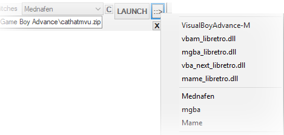

˚ skeletonKey ˚A unified interface for ROMs, emulators and frontends. |
for Windows
WEBSITE:
Source code:
(Repo)
Installer
(no metadata files)
size:[RSIZE] mb
SHA1 :[RSHA1]
Contains only the necessary files.
Database files containting metadata. Extract this archive into your installation folder.
Released :

Features:
- A comprehensive, easy to use & compact GUI
- Drag & Drop ROMs to launch & create playlists.
- Leverages Archive.org ROM libraries for Netplay automation
- Global and granular control over libraires of ROMs.
- Deploy a gaming environment to a portable device such as a flash-drive.
- Mirror your saves and save-states into a cloud (Dropbox/GDrive/OneDrive)
- Convert ROMs to a Windows executable
- Download, install & setup HTPC frontends, emulators and joystick mapping programs.
To Do:
please leave a comment with your suggestions
SkeletonKey functions both as a ROM launcher and as a backend configuration tool for HTPC frontends.
ROMs can be launched quickly in many ways:- Drag & drop a ROM file to the desktop icon,
- into the options window
- use the skeletonkey GUI to browse filtered ROMs categorically with search functions and quick-sets.
- streamed from Archive.org
- from the command line
As a configuration tool, skeletonKey can deploy a ROM-library that meets the expectations of users who desire a means to maintain the integrity of settings and assets indipendently of a frontend or emulator.
Nearly every skeletonKey option has a mouse-over tool-tip . Operational feedback appears in the statusbar at the bottom of the window.
Overview
After skeletonKey is installed, an "emulators directory", a "systems directory" and the retroArch are defined- whereupon a quick-setup wizard can automatically install retroArch with several cores.
Emulators detected in the emulators direcory are assigned to detected systems in the systems directory,
RetroArch is tightly integrated into skeletonKey with an exhaustive set of options and exclusive features for netplay. By default the most compatible core is selected as the skeletonkey's primary association for most of retroarch's supported systems.
Portable Mode
Skeletonkey can be run from a thumbdrive or other portable drive. The Portable.bat file should be run from the portable device when first starting skeletonKey from a portable drive on a new computer or if the drive letter of the portable device has changed.
Many users may desire to transfer an existing skeletonKey installation to a portable drive and the portable utility should facilitate the conifiguration migration. Migration options for the portable utility include localization of items to the drive for playlists and simple search & replace. Retroarch and skletonKey's other emulators' per-game settings are updated to reflect the new portable skeletonKey location.
If you already have skeletonKey and retroArch intalled, copy the folders to your portable drive and run the Portable.bat in the skeletonKey folder on the portable drive.
Command-Line
It may be desireable to specify an emulator-preset to override the assocation from the command-line.
SkeletonKey accepts the option -run= followed by the nickname of the emulator preset followed by the path to the rom. Any options specified by the preset are respected.
SkeletonKey launched from the command line without this option functions identically to drag'n drop.
..\..\skeletonkey>
skeletonKey.exe -run=NickName "C:\Library\Console Name\Rom Name\rom file.rom"
eg: skeleonKey.exe -run=snes9x "C:\path..\to..\supermarioworld.sfc"
**Nicknames must not contain spaces**
Forking
A deployment tool is available for users who wish to publish a skeletonKey. SKey-Deploy.ahk can be compiled to build, maintain and deploy a skeletonKey source-code versioning project, website and binaries.
: SETTINGS :
Program Settings
Program settings such as the root location for your systems, overrides for the batch-script launcher and other operational options can be adjusted in the settings tab.
Auto-Load Per-Game Settings
SkeletonKey will automatically load any per-game settings previously created and create settings for that title upon launch if none are found.
Systems Directory
By default, ROMs are [categorically] stored by system-name in the ..[Systems ROOT]\[SYSTEM NAME] folder.
RetroArch's "core_assets_directory" should be assigned to the [Systems ROOT] folder.
Archive.org ROMs will be downloaded to the corresponding system name which follows the no-intro naming nomenclature.
Emulators Directory
By default, all emulators will be installed to the Emulator Directory. Upon assigning a directory to the Emulators Directory, skeletonKey will search subdirectories for previously installed known emulators not currently identified or manually assigned.
BSL - Batch-Script-Launcher
Typically, a frontend will assign an emluator to a directory containing a set of ROMs with a list of supported extensions. (eg: nestopia.exe will open all .nes, .zip, and .fds files in the NES folder)
In this case the BSL.exe is used as the "emulator" where ".bat" or ".lnk" is the extension for any ROM-Jacket library. The BSL will execute the ROM-Jacket launcher while assisting the visibility and state of other assets.
BSL can override settings defined by ROM-Jacket launchers and provides a convenient way to enable custom tools to accomodate new HTPC frontends.
:=: Main :=:
Options are categorized by type. The Launch tab is responsive and will populate options for the currently selected supported emulator. Any previous settings for the currently selected ROM are loaded.
Global-Launch-Menu
The Launch menu items persist across emulator settings populated in the Main tab. These items are at the top of the window and are necessary to browse directories, navigate playlists and launch a ROM.

The Global-Launch-Menu includes:
- the System List dropdown for directories & toggle for playlists
- the ROM selector button
- the EMU dropdown menu
- the"swtiches" toggle
- the editable selection menu containing items in the currently selected playlist or directory
- the "C" configure button
- A split
LAUNCH ::>button
System List
The folder/playlist toggle will toggle this dropdown between retroarch playlist files and the current system libraries.
Changing the system will automatically change the emulator/core dropdown to the associated nickname and populate the tab with options for that system's associated emulator.
Right-Click on this dropdown to configure it.
The switches toggle will expose options & arguments fields for emulators. These are pre-packed with many options and arguments, however spaces should be observed when plugging in your own switches.
LAUNCH
The ROM currently in ROM-List will be launched by the emulator/core in the EMU-List.
::>
A quick-selection set of all assigned presets and known compatible presets will appear in a dropdown menu
This menu can also be accessed via right-clicking on the LAUNCH button.
ROM List
The editable dropdown menu contains a list of all ROMs in the current system/playlist dropdown menu.
Whenever a new ROM is selected, a new configuration will be generated in the ROMs' configuration folder
(eg:\...\skeletonkey\cfg\Microsoft - DOS\msds_dosbox\TMNT\dosbox.conf).
If the configuration files for that ROM already exist, their values will populate the tab.
EMU List
The EMU list is a core/emulator dropdown which contains a list of all cores, all nicknames for system-associations, and all emuators.
Changing the core/emulator dropdown will populate the Main tab with options for the emulator/core (if supported) and any load existing settings the title may have.
Right-Clicking on this menu enables assignment and configuration.
Emulator Options
These options are dynamically loaded for each emulator. Settings changed by the user at run-time should load and populate the GUI after lauching.
Drag & Drop
The Drag & Drop area is visible in the upper-left hand corner of the when the search box is expanded using the "find" button in the lower-right hand corner of skeletonKey. With the Auto-Launch option enabled, skeletonKey will detect the ROM and launch it using the system's associated core/emulator, or bring forth the core/emulator dropdown.
Search & Find
The "find" button can be found in the lower right hand corner of the tab and will expand the search fields.
skeletonKey can search for ROMs in your "Systems" directories or playlists.
Selecting a title will repopulate the System-List & make it active in the ROM list.
A right-click menu allows for a single ROM to be launched by any installed emulator or it's directory opened by windows explorer. Additionally, multiple files can be selected and added to the current playlist.
Emulator :=: System
RetroArch, Systems, Emulators, Frontends & Utilities
SkeletonKey can be used to quickly install emulators, frontends, retroArch and utilities. The Install Tab is also used to associate skeletonKey's systems with emulators and retroArch cores when using skeletonKey as a launcher.
Installing RetroArch & cores
RetroArch and components can be installed separately or as a single package (stable). The "RetroArch" list item includes all components needed by retroArch. The most recent nightly build as well as the stable version are available. A core-upate button will check for cores with updates to upgrade en-masse.
Installing BIOS Files
Drag & Drop BIOS files or a BIOS pack (.7z .zip .rar) to automatically install them to their proper places in supported emulators directories.
Emulators
SkeletonKey can install hundreds of emulators. Supported emulators can be configured indipendently (for per-game settings too!!!) as they are launched by skeletonKey and as emulators assigned to ROM-Jackets.
Systems
ROM Directories
Selecting "Systems" from the dropdown menu will allow users to define directories containing ROMs for over 100 systems. ROM directories specified outside of the systems directory will be linked (junctioned) into it with the supported system's name.
System-Associations & EMULATOR-ASSOCIATIONS
Emulator & System Associations
The Associations section of the Install tab can be used to change the association of a system to another core or a standalone emulator. Associating an emulator to a system creates a unique set of preferences for the emulator and assigns this set a nickname which can also be assigned to other systems. Right clicking on the System List or emu/core dropdowns will bring up menus to quickly configure or associate systems with emulators and cores.
Each system has a designated retroArch core and list of emulators with which to associate its ROMs.
This association defines how skeletonKey will automatically launch ROMs, however these core/emultor-to-system assocations can be changed to any core or standalone emulator.
Systems are defined in part by file-extensions exclusive to the system.
(eg: nestopia.exe [and retroarch's nestopia_libretro.dll core] by default are to assigned to the NES) & (eg: ONLY the Nintendo Entertainment System uses the .nes file-extension)
The system's core can be changed to any core or standalone emulator executable. A nickname is used to identify the system for different systems using the same emulator. Because an emulator may have multiple system-assocations, each system associated to an emulator should have a unique "system identifier" nickname.
Extensions which are shared by multiple systems (e.g: MANY systems support the extension ''.bin'') can be assigned to any core or emulator. 4 sets of extensions are available.
Options, arguments, quotes, ROM-paths and the extension can be adjusted to suit an emulator's needs.
Specifying [ROMPATH] & [EMUPATH] will be parsed in the options and arguments to specify the ROM's path or emulaor path respecively. The executing command output will update to refletct the options and settings. The output should be referenced against the emulator's documentation.
[CUSTMOPT] & [CUSTMARG] are special tags assigned to MAME and other emulators which allow the passing of overriding options and arguments at runtime via the "switches" checkbox in the Global-Launch-Menu or Repository-Systems-Menu.
!!!!Enabling the "switches" override will deactivate preset options such as auto-system and ROM-type detection!!!!
Many MAME systems and several supported emulators options and arguments are available as presets for custom options & arguments.
Per-Game Configurations:
SkeletonKey can retain emulator settings for each game (configuration files, save-states, battery-saves/nvram) under supported emulators. Any changes that are made during gameplay will be saved.
Operational Layout:
SkeletonKey copies and moves these configuration files back and forth between the emulator's folder and the per-game configuration folder before and after the emulator runs.
Configuration files are stored inside a folder of the ROM's name. A folder for each system can be located in the skeletonKey installation folder under the "cfg" directory. EG:
:\ ..\skeletonKey\cfg\Nintendo - Game Boy Advance\vbam\The Minish Cap\vbam.ini
ROMs dropped to the desktop icon which are not identified as belonging exclusively to a core/emulator will bring up a menu allowing users to quickly select a core/emulaor preset.
Emulator Associations
Emulator Associations will appear for all detected and created emulators in the core/emulator dropdown of the Launch-menu and in the search-window's right-click menu in the options-tab. Emulator associations can be created for quickly and many are preset with compatible and configurable presets. By default, most systems will have [CUSTMOPT] and [CUSTMARGS] which will enable the custom-switch option (found in the launch-menu of the options-tab and the archive tab.) to be set at runtime.
Each emulator has options for command-line needs. Unlike System-Associations, Emulator-Associations are presets for skeletonKey launching ROMs. Over 200 emulators can be installed via skeletonKey.
Drivers
Visual C++
Many emulators require these runtimes
DirectX
Daemon Tools
XBox360 Drivers
This installs the XBox 360 Joystick drivers from Microsoft. These are needed for Windows Vista and 7.
SCP Wrapper for Dualshock Joysticks
This installs the SCP Wrapper for Sony Dualshock joysticks.
This is the most reliable and easiest way for DS3/4 users to use their joysticks in Windows 7/8x-10.
DS4Windows
DS4Windows is a Sony DualShock 4 driver for windows. It is installed however the configuration of this driver is left to the user.
Daemon Tools
Skeletonkey can automatically install this program through the command-line which will NOT install the included toolbar or any additional software.
The Daemon Tools program is needed for the SSF Sega Saturn emulator, the UNZ FM-Towns emulator and may be required for any emulator which cannot directly read cd/dvd image files. Mounting disc images with Daemon Tools is desireable for users who wish to switch disks reliably or have discs in formats unreadable by the emulator.
!!!!IMPORTANT!!!!
Open the Daemon Tools program.
If you do not have a SCSI drive in the list, add a SCSI drive.
Right click on the new drive icon.
select Device Paramaters
Uncheck Auto insert notification
Joystick Drivers
Xpadder
Antimicro
:=: Joystick :=:
Up to 16 Joysticks are supported (through multiaps). Each core can also have input_remaps.
Joystick Options
:=: Playlists :=:
Drag and Drop ROMs to dynamically add files to playlists. Each playlist is unique to the frontend it is created for however skeletonkey can convert retroArch to/from emulationStation playlists.
XMB : retroArch
Each item added to the playlist contains the name of the ROM, the path of the ROM, the crc hash of the ROM, the core/emulator name, path assignment, & the name of the playlist.
The core/emulator dropdown is assigned to the selected items when they are added to the playlist.
RetroArch's Per-Game Configuration Files
A template config file can be specified for the retroArch's per-game configuration files, otherwise current skeletonKey settings are used.
Playlist Options
Right-Clicking in the Playlist-Menu will allow selected items to change the core/emulator assignment for selected items.
Playlist Database
The playlist database is a compiled collection of all playlists which allows netplay-matches and searching for ROMs in very large libraries very fast.
EmulationStation Gamelists
Like emulationStation's system-list, emulationStation gamelists are xml files which contain standard metadata tags. Absolute paths to assets such as images and video files are accepted, however relative paths are also accepted, making the entire frontend portable across platforms (*nix/apple/windows). Assets can be arranged & named uniquely, however skeletonKey propagates assets to an emulationStation deployment which follows a local-layout and naming options as such:
Box-Art files: ~/downloaded_images/[ROM_TITLE]-image.png
Marquee images: ~/downloaded_images/[ROM_TITLE]-marquee.png
Thumbnail images: ~/downloaded_images/[ROM_TITLE]-thumb.png
Marquee images: ~/downloaded_images/[ROM_TITLE]-marquee.png
Video snaps: ~/downloaded_images/[ROM_TITLE]-video.mp4
:=: Repository :=:
Archive.org Options
Options to download into a ROM-Jacket, manual overrides and extraction settings for compressed files Most options available in the Main tab's Launch-menu are available.
Enabling the "Download Only" option will allow multiple files to be selected and queued.
MAME ROM-sets can also be easily accessed, although these often contain ROMs which are incompatible with other emulators.
The archive.org global-prefix can be overridden to the ftp or http host of your archives, allowing anyone to easily create custom repositories. eg: http://myhost.com/myfolder
Files in the skeletonkey\gam folder contain .gam files which contain the relative path to global-prefix followed by a : followed by the name of the ROM. eg: /system-name/game_name.zip:game_name
Adding the full http url path to the ROM file in a .gam file will override the global download prefix. eg: http://crazyurl.com/fileindex/html/some_game.zip:some_game
:=: Frontends :=:
The Frontends tab contains configuration options for many different cabinet and couch-gaming frontends.
Media
Asset-Management is the primary component of skeletonKey. Deploying a frontend means creating a unique data-structure, and because the arrangement and naming of assets and artwork vary from emulator to frontend, skeletonKey opts to prioritize a local-storage system (ROM-Jackets) to enable migration and deployment indipendently of any proprietary layout or scheme needed by a frontend.
SkeletonKey has a repository of photographic icons, full-HD images and large logos for 100 systems and can also "scrape" artwork from a multitude of hosts. Several databases are searched to obtain a multitude of image-types, video-snaps and metadata for thousands of titles spanning arcade, computer & console-systems.
Selecting "Systems" in the Media interface will enable icons, logos, backdrops, videos and other media to be downloaded for selected systems. Alternatively, sets of these items can be downloaded. Themes for these items can be selected using the "Artwork Theme" dropdown.
Selecting "Jackets" in the Media interface will enable items to be downloaded for the selected ROM-Jackets.
Selecting "ROMs" in the Media interface will enable ROM-paths to be defined for supported systems.
Caveats: Python must be installed to download videos from youtube.
Media Options
XMB
XMB is retroArch's premiere GUI with thumnail support.
Using skeletonKey users can easily see which thumnails have been downloaded and copy any image to match the names corresponding to the unmatched ROMs .
XMB Menu Options
EmulationStation
EmulationStation is a lightweight frontend that has metadata, boxart and video-snap capabilities.
SkeletonKey can configure emulationStation to use Jackets (batchscript launchers), mirrors (shortcuts), ROM files or any combination of these types of elements. Additionally, skeletonKey can load existing configuration files (es_systems.cfg), gamelist files (gamelist.xml) to add, remove, edit and reorder games and systems.
The Paradigm:
Like Media Browser, emulationStation automatically adds any ROMs found in a directory to its database, however it can be fine-tuned to parse xml lists which skeletonKey can generate.
Caveats:
EmulationStation Menu Options
Mirrored Links
Mirrored Links are Windows shortcuts.
Leveraging Windows shortcuts allows for easy customization of frontends. As these files can be moved, copied and deleted without affecting launchers or ROM-Jackets, creating custom playlists is as easy as navigating Windows Explorer.
Mirrored Links Menu Options
Each Mirrored file can be assigned an icon found
Media Browser
Media Browser for Windows Media CenterHyperspin
HyperspinretroFE
KODI/XBMC
-
Rom Collection Browser
-
Advanced Emulator Launcher
Advanced Emulator Launcher (AEL) & Advanced Launcher (AL)
-
The Internet Archive ROM Launcher
:=: Cores :=:
Configure Cores and create core-configuration overrides.
Retroarch Core Options
:=: Netplay :=:
Netplay Options
It is recommended (not required) for retroArch netplay users to create playlists containing all ROMs on their computer that they wish to play online.
SkeletonKey employs unique matching methods which enable users to connect dynamically however, selecting "All_Playlists" from the drop-down menu will allow skeletonKey to find a matching hash or ROM name from all of your playlists.
Hosting:
In the Main tab, settings such as delay-frames, port number and file-server port can be adjusted.
Enabling the file-server will compress the ROM in zip format and copy it to the \...\systems\netplay\ directory prior to hosting. (if it isn't already zip-compressed.)
In the Archive tab, users can select any ROM from the archive to host.
SkeletonKey hosts with the file-server option enabled wll appear with the port number in brackets prefixed to their username.
This [tag] is automatically detected by skeletonKey clients which will enable the "Recieve ROM" option to download the file from the host to play automatically.
Connecting:
In the Netplay Tab, refreshing the hosts will populate the lobby with currently hosted ROMs. Selecting a host will allow skeletonKey to look in the currently selected ROM directory or playlist file for a matching ROM. If a matching CRC hash to the host's ROM file is not automatically detected, skeletonKey will try to match the name of the ROM's title. Users may opt to force a connection to a host using any ROM populated in the ROM list or browse to select a ROM. If the ROM is not located in the current local setup, enabling the "web-lookup" option will select a ROM from the Archve tab and make a connecting available.
Tips for Netplay:
In the Main tab, uncheck "Pause In Background" & in the Frontends tab, select "XMB" and uncheck "Pause In Menu".This will keep gameplay active and will help maintain a synced connection while you adjust any settings during a netplay sesssion.
:=: ROM-JacketS :=:

Jacket Options
Overview
RoM-Jackets are folders which contain a ROM, any individual settings it may have for emulators, artwork, assets and a launcher to maintain files contained in the jacket indipendently from other titles for any given system or emulator.
Subdirectories for common emulator files such as save-states, battery/memory-saves, screenshots, manuals, and videos are created for each jacket.
It is desireable to create RoM-Jackets for libraries where- Many emulators may be used
- ROMs require an emulator to deviate from conventional settings
- Settings must be maintained between sessions
- native windows mechanisms and abstractions will be used to design/curate HTPC environments
For those interested in developing for the RoM-Jacket spec, a few principles should be observed:
Launchers should be executable natively by the operating system, make no changes to the system environment and any augmenting behavior beyond the emulator should be disabled unless specifically detected
(ie: the launcher should require no user interaction irrespective of any errors the script may encounter).
Titles which contain many files and folders (DOS Titles) should be placed inside a subdirectory of the Jacket.
Guidelines forthcoming...
Systems
When a system is loaded into the Jacket tab, the ROMs and Jackets contained within the system's directory will populate and can be filtered into the list on the left side of the tab. Settings in the Jacket tab can be saved for each system. Each system has a default emulator associated with it which will populate with previously slected options or a configuraiton which is designed to be compatible with a very low-spec PC.
By default, skeletonKey will assign retroArch's core_assets_directory or (downloads directory), to the "Systems" directory location, however users may define these from main options screen by selecting "Options" from the file menu.
Jackets
Jackets are created for ROMs using the title or file-name of ROMs.
Consolidate vs. Individuate
ROM-Jackets are individuated by default, however the abundance of releases a title may have seen throughout the world is multiplied by versions the developer released and again multiplied by ROM-dumps. Subsequently many ROM-collections and system-libraries are simply too large and unwieldy for practical purposes. In the interest of bringing forth functional libraries it may be desireable to consolidate each title without regard for region or version.
Consolidate ( )[]
This will consolidate ROMs containing the same base-name, grouping each ROMs regional counterparts and multi-disc ROMs together into a single jacket. The base-name is the ROM's filename without any text in parenthesis or brackets.
eg: region, disk-number, rom-revision, & any other superflous information is pruned to the game title.
Folder: Game Title\
Grouped ROMFILE: Game Title (USA)[version].rom
Gropued ROMFILE: Game Title (JAPAN)[v-2].rom
Grouped ROMFILE: Game Title (Disk B).rom
Grouped ROMFILE: Game Title (1 of 2)].rom
Grouped ROMFILE: Game Title (PAL).rom
Effectively, this will help eliminate the need to scroll through many different versions of games in a library and will help wrangle multi-disc games. This is the preferred method of folder-generation for users wishing to tame their library and generate friendly-names for their frontend. Launchers created for each consolidated jacket will be named with the base-name and the first alphabetical or [!] ROM will be launched by default.
Individuate
This will simply jacketize each ROM using the name of the file without the extension.
eg:
Folder: Game Title (USA)[v-1]\
ROMFILE: Game Title (USA)[v-1].rom
Folder: Game Title (USA)[v-1.01]\
ROMFILE: Game Title (USA)[v-1.01].rom
Folder: Game Title (USA)[v-1.11]\
ROMFILE: Game Title (USA)[v-1.11].rom
Folder: Game Title (EUR)[b]\
ROMFILE: Game Title (EUR)[b].rom
Sub-directories
Several sub-directories to house assets are automatically created for each jacket. Custom subdirectories can also be created.
Extracting Archives
Archives found within a system's directory can be extracted into in a couple of ways:
Before: Each archive is extracted prior to any jacket is created. Extracted files are not jacketized.
After: Each archive is jacketized and then extracted into the jacket.
After archives are extracted they can be stored in skeletonKey's tmp directory, deleted, or kept in the jacket.
Launcher Options
The default settings for each emulator are designed for low-powered specification settings, however many consoles offer a variety of settings which you may change when configuring a console individually.
Unless explicitly specified at creation-time, the launcher will launch the first alphabetically named ROM in the Jacket.
Drag'n'drop and the command-line may usually be used to specify and override an alternative.
>C:\Games\console\System - Name\Game\Game(name).bat "Z:\NetworkDrive\Sample\ROM.bin"
PER-GAME
Each ROM retains all unique emulator configuration files.
Paradigm:
All settings, quick-saves, save-files & snapshots for the emulator are saved in the ROM-directory.
The ROM's configuration for the emulator is copied to the proper location upon execution of the launcher.
It should be noted that skeletonKey's Launcher settings have their own set of per-game settings which operate indipendently from RoM-Jackets (even when using the same ROM file).
Some consoles use the same emulator and these consoles should use either Per-Game or Global settings (not both).
GLOBAL
All games using the assigned emulator have configurations and settings governed and maintained by the emulator.
Paradigm:
All settings, quick-saves, save-files & snapshots for the emulator are saved in locations set by the emulator in its default state and any changes made to a game's settings in the console's set will be respected by all games using the global option.
Caveats:
Any and all changes made to the emulator's settings will affect all other games.
Any multi-system emulator must be using a global option for all systems.
Pre-Command / Post-Command
Local/Absolute
The Absolute option enables selecting a file via a file dialog box to be run.The Local option enables any file (including a file not currently available via a dialog box) to be designated.
Applications can be designated to run both before the emulator is launched and after the emulator exits. An option exists to allow the launcher to wait for the command to complete until proceeding, or continue to execute immedietlely after it is launched.
Command line options can be set for any command. Additionally, keywords can be entered which will be parsed by the launcher at runtime. These include:
[ROMPATH]: This will designate the directory path of the ROM.[ROMF]: This will designate the ROM filename.[ROM]: This will designate the name of the ROM file without the extention. (useful for MAME)[EMUL]: This will designate the directory path of the emulator.[EMUZ]: This will designate the emulator execuatble.Paradigm: Adding pre/post commands is intuitive, however it is possible to add a command inbetween commands after a set has already been assigned. To do this, select the command which will preceed your new command and then press the add-command button (+).
Emulators Presets
Each supported system has one or more emulators preconfigured for them. The default emulator will automatically be assigned with compatible settings, however any program can be assigned to any system.The Paradigm:
Launchers are simply batch files that call the emulator against the ROM using the command-line interface using presets.
A supported fronend will use RoM-Jacket's BatchScriptLauncher program to control the frontend and execute the launcher.
Emulator Config Files
These fields pre-populate with the currently selected emulator's preset commands. These commands are designed to maintain the Jacket's assets and will typically copy files back and forth between the Jacket and the emulator's directory.
Pre-Run / Post-Run
Similar to "Pre-Command / Post-Command" these are commands which run before the emulator launches and after the emulator exits, however these commands execute before the "Pre-Commands / Post-Commands" respectively. You may enter any windows batch-script commands in these fields and likewise, keywords will be parsed.
Paradigms & caveats
ROM-Jackets can be deployed to suit the needs of a particular system which include requirements such as Disk-Grouping, however standardized naming has generally fit a modality allowing for simple identifiers to disregard and group (regional) and [developer-version] titles so that a library may be navigated using universal conventions.
Many systems and emulators require unique and proprietary directory structures, naming schemes and locations and in such cases junction-linked files are jacketized.
Keymapper
JoyMapper
Xpadder and Antimicro programs are currently supported.
Return Profile
Frontends may require a unique joystick profile to properly function. This profile is loaded when returning from a game.
Keyboard
Emulators in the factory state will map keyboard keys to the system's buttons and joystick directions. SkeletonKey can create profiles for these keys as they correspond to the native joystick layout of the machine. If the chosen console is a custom/unsupported system, a generic and multipurpose configuration is created.
Blank
causes an empty profile to be created for each game to disable xpadder/antimicro while the emulator is running. This is desirable for users who are processing a console with a custom emulator. You may choose to create a profile for your system and propagate it through the console's library using the Config Utility.
Joy
This is the default option for skeletonKey and creates a profile with only Emulator functionality mappings such as "Save/Load State" "Reset" "Exit/Power OFF" and unique functions such as "Rewind/Fast-forward. Emulators are configured to use directinput/xinput (XBOX 360 Joystick mappings).
:=: Utilities :=:
Copy Cfg
Similar to the portable utility, this allows you to propagate settings from one file throughout an entire console's library.If a launcher is selected (.bat) Skeletonkey can propagate the file throughout a console's library and update or replace all other launchers.
Any file can be propagated (eg: an xpadder profile) and subdirectories are supported.
Cloud
This menu allows you to backup your save files and save-states into a cloud. Google Drive, Microsoft OneDrive and Dropbox will be automatically detected.This is ideal for users who want to share saves or play from multiple computers.
Execute
This allows you to select a ROM or an entire console's library to transform into a portable executable. The ROM, any additional files specified by the user, an emulator and special configuration files are compiled and saved to the location of your designation.
If A Jacket with boxart is detected, it will be used as the icon for the executable and shortcut it creates if installed..
Caveats:
WIP
FAQs:
Question: I'm having trouble with a feature. Can you Help?
Answer: Use the form at the top of the page or create an issue on github
Question: Does this work in linux?
Answer: All functions seemed to work in a WINEbox I tested this in, even netplay. I'm very interested in programmable bash-script launchers.
Question: I want to see a feature implemented or do something with skeletonKey it cannot currently do.
Answer: Donate